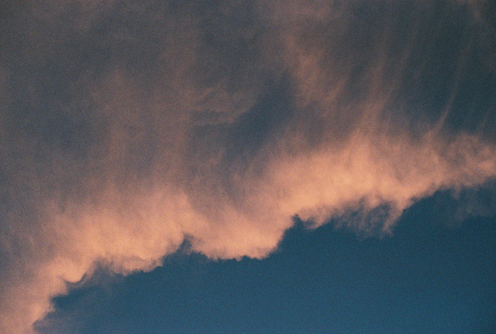
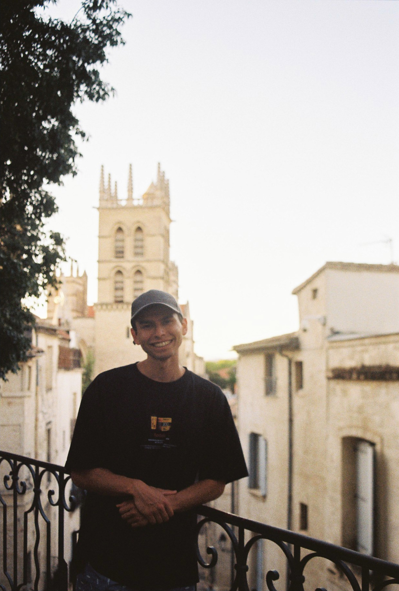
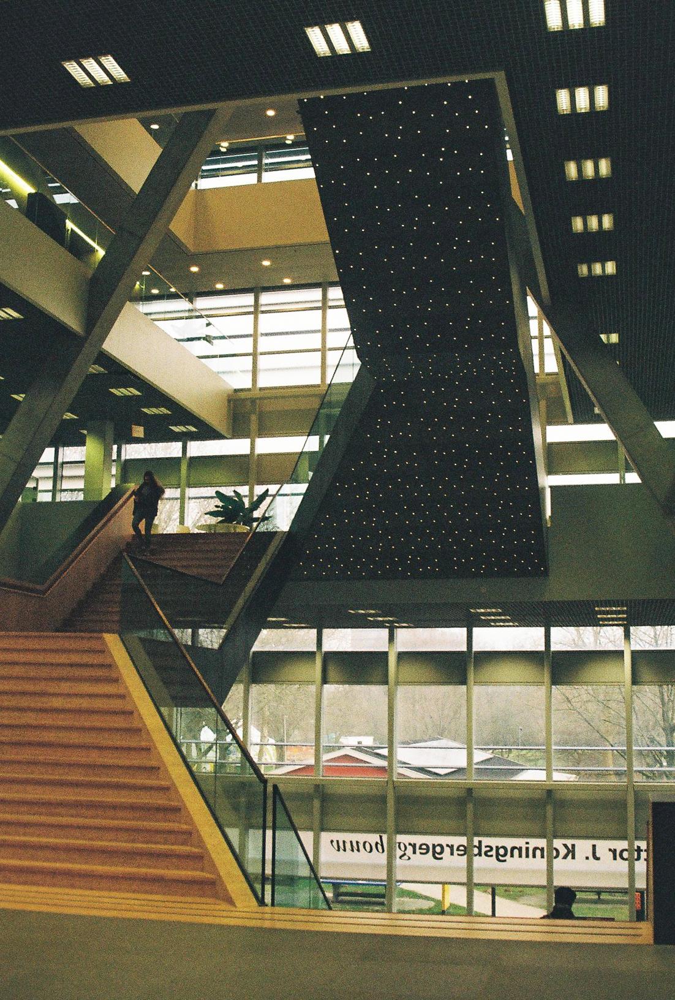
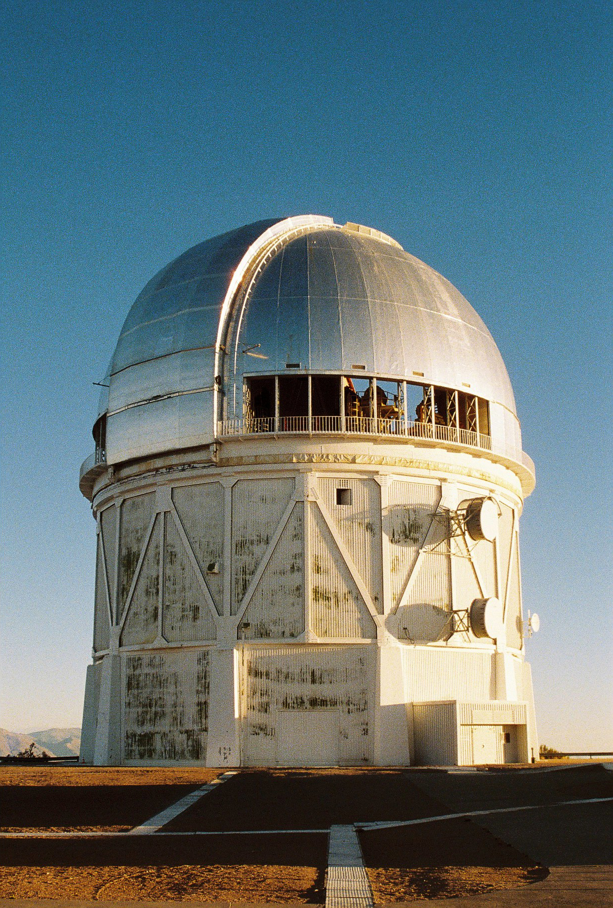

Hello, I'm
Atmospheric Dynamics · Exoplanet Astronomy · General Circulation Models

My research explores the planetary atmospheres, both with numerical models and astronomical observations. I am particularly interested in understanding how rotation rate, stellar forcing and cloud feedback shape the diversity of climate states on terrestrial planets.
Utrecht University
Investigating the atmospheric circulation of Earth-like aquaplanets under different obliquities and rotation rates using ExoSPEEDY. Supervisor: Henk Dijkstra

Investigating circulation patterns and cloud-cover fingerprints in aquaplanet atmospheres.

Observational astronomy: planetary transits, asteroid tracking, and Solar System studies.
An overview of the topics covered throughout the Climate Physics Master's programme.
Utrecht, The Netherlands
Utrecht University